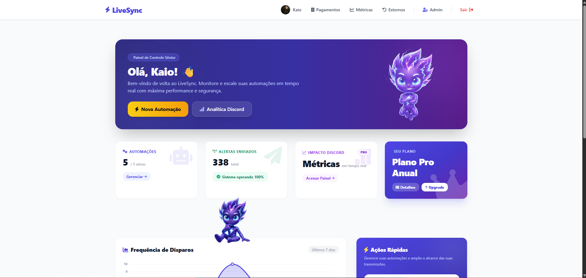
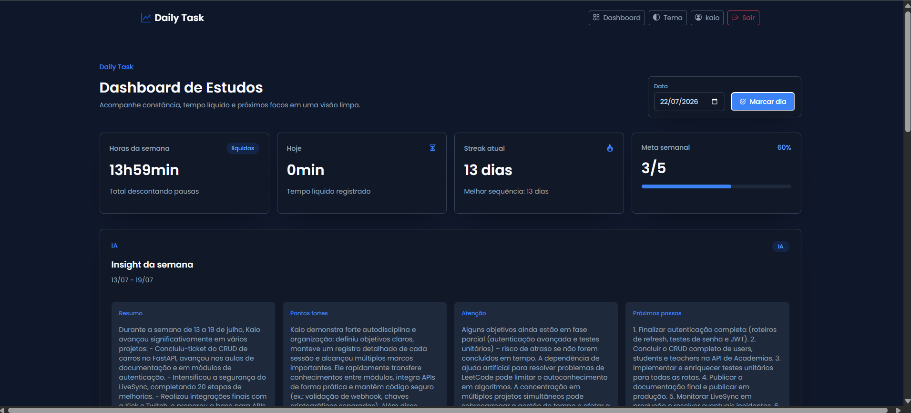
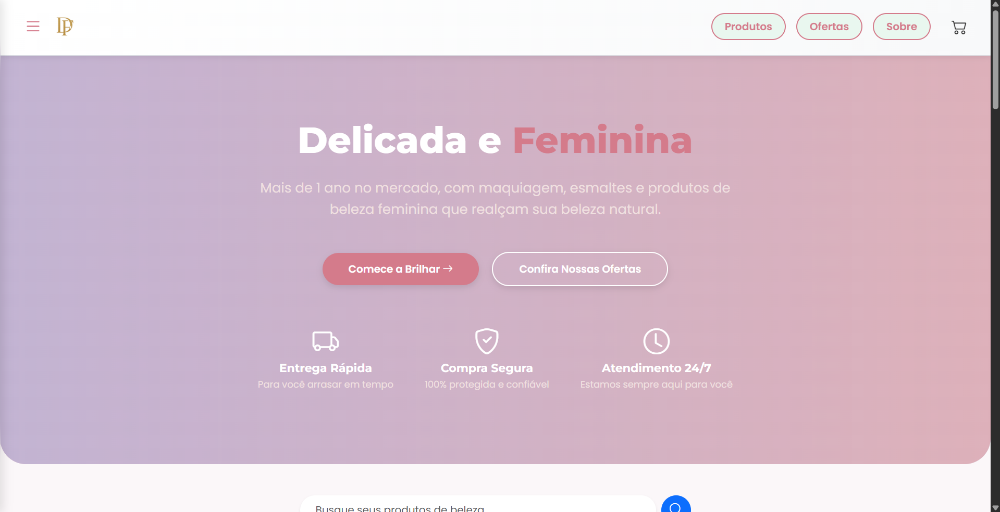
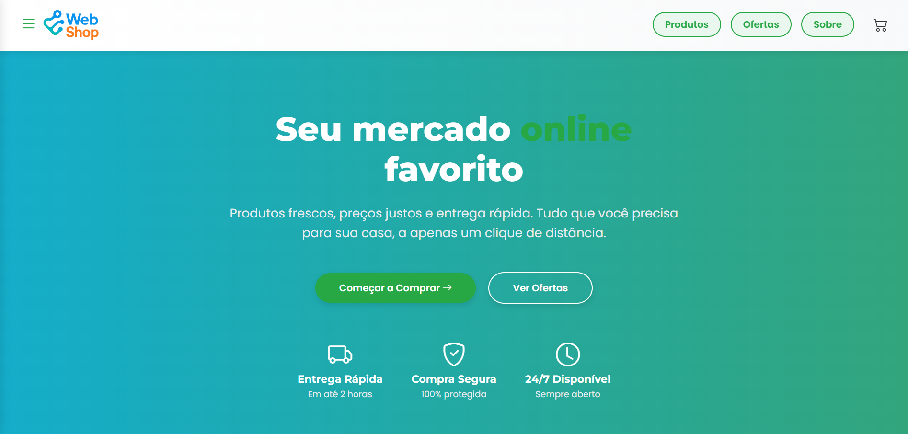
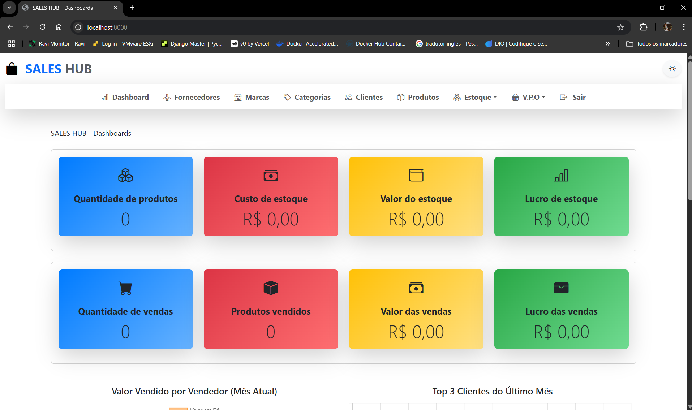
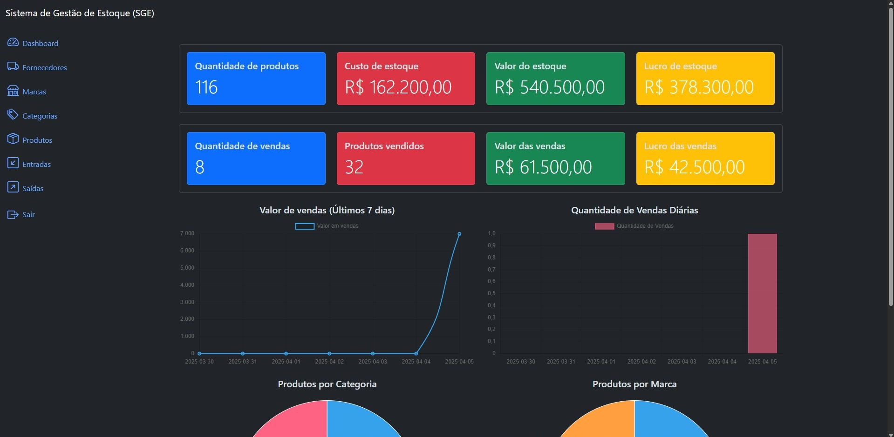
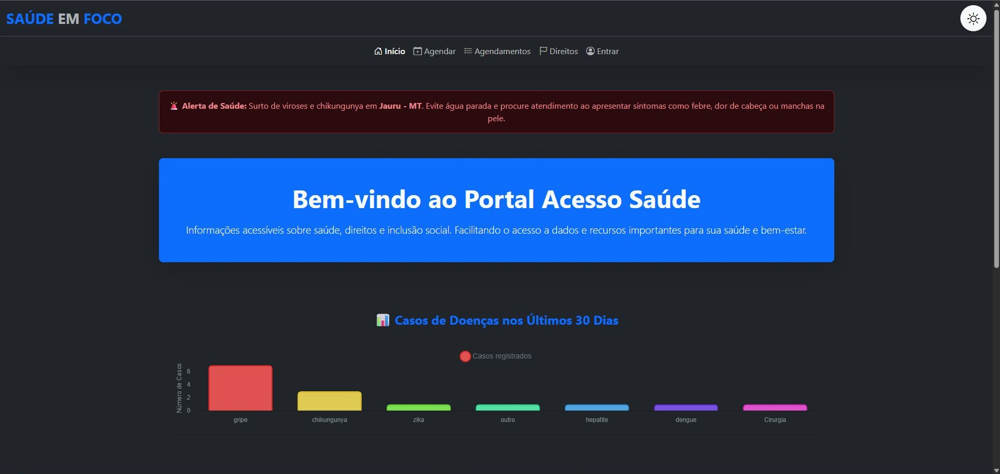
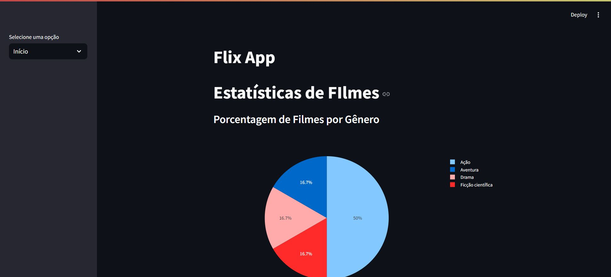
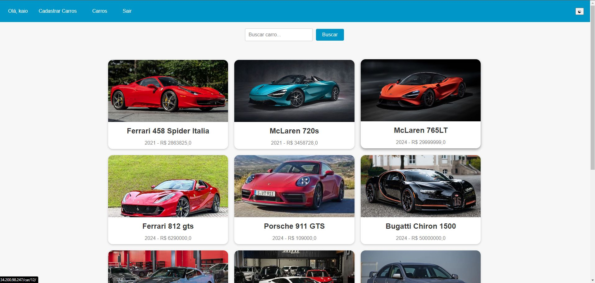

Construindo o Back-End que Impulsiona o seu Negócio
Transformo regras de negócio complexas em APIs seguras, sistemas escaláveis e automações eficientes. Focado em resolver gargalos tecnológicos para que sua empresa possa crescer.
Sobre Mim & Especialidade
Sou um Engenheiro de Software Back-End especializado no ecossistema Python. Com experiência prática como Desenvolvedor e Mentor na Lacrei Saúde, onde atuo também na liderança técnica de um time de 4 desenvolvedores, construindo arquiteturas desacopladas, APIs RESTful e integrações de alto desempenho. Meu foco é garantir que o "motor" do seu projeto funcione com excelência, segurança e escalabilidade.
Stack Tecnológica
Minha Jornada
~2014
Ganhei meu primeiro computador e iniciei minha jornada autodidata em tecnologia.
2019
Primeiro contato com programação através do Python.
2024
Início da faculdade e foco total em desenvolvimento backend com Django.
2025 – Atual
Desenvolvedor Backend Júnior – Lacrei Saúde (Voluntário)
Desenvolvimento de APIs RESTful, Docker, Celery, Redis e arquitetura desacoplada.
Mentor e Líder Backend – Lacrei Saúde
Liderança de uma equipe de 4 desenvolvedores, apoio técnico, code review, boas práticas e arquitetura de APIs.
Como posso ajudar sua empresa?
🚀 Desenvolvimento de APIs REST
Criação de APIs robustas, seguras e documentadas para conectar seu front-end, aplicativos ou sistemas de terceiros utilizando Django REST Framework.
⚙️ Automação de Processos
Desenvolvimento de scripts e bots em Python para automatizar tarefas repetitivas, extrair dados e reduzir custos operacionais do seu negócio.
💻 Sistemas Web Completos
Arquitetura e criação de plataformas sob medida (ERPs, CRMs, Dashboards) focadas em alta performance e regra de negócio específica.
🔧 Sustentação e Melhoria
Refatoração de código legado, otimização de banco de dados (PostgreSQL) e implementação de testes automatizados para evitar falhas em produção.
Casos de Uso & Projetos

Live Sync
Problema: Latência na comunicação e necessidade de atualização manual de dados.
Solução: Plataforma de sincronização real-time com arquitetura escalável orientada a eventos.

Daily Task
Problema: Desorganização e perda de controle sobre demandas diárias.
Solução: Sistema ágil para gestão e monitoramento de tarefas diárias de usuários.
Medical Appointment Scheduling API
Problema: Conflitos de agenda e gestão manual de clínicas.
Solução: API robusta para controle estrito de agendamentos médicos e validação de regras de negócios.

Delicate and Feminine
Problema: Baixa conversão em vendas via redes sociais.
Solução: Loja virtual customizada com carrinho, checkout estruturado e gestão de estoque.

Web Shop
Problema: Dificuldade logística para gerir um supermercado local.
Solução: Plataforma full-stack para digitalização das vendas e expansão do alcance regional.

Sales Hub
Problema: Descentralização de informações de clientes e relatórios.
Solução: Sistema de gestão comercial simplificado que atua como um hub de vendas.

Sistema de Gestão de Estoque
Problema: Perdas financeiras por falta de rastreabilidade de produtos.
Solução: Sistema centralizado de entradas/saídas que prevem furos de estoque.

Health in Focus
Problema: Falta de ferramentas de saúde voltadas para acessibilidade digital.
Solução: Plataforma interativa com diretrizes rígidas de inclusão e fácil navegação.

Flix App
Problema: Dificuldade em agregar catálogos dispersos de entretenimento.
Solução: Integração fluida com APIs públicas para gerar um hub dinâmico de filmes.

Cars
Problema: Gestão ineficiente de frotas e catálogos de veículos em concessionárias.
Solução: Painel CRUD administrativo para controle completo do ciclo de vida de veículos.